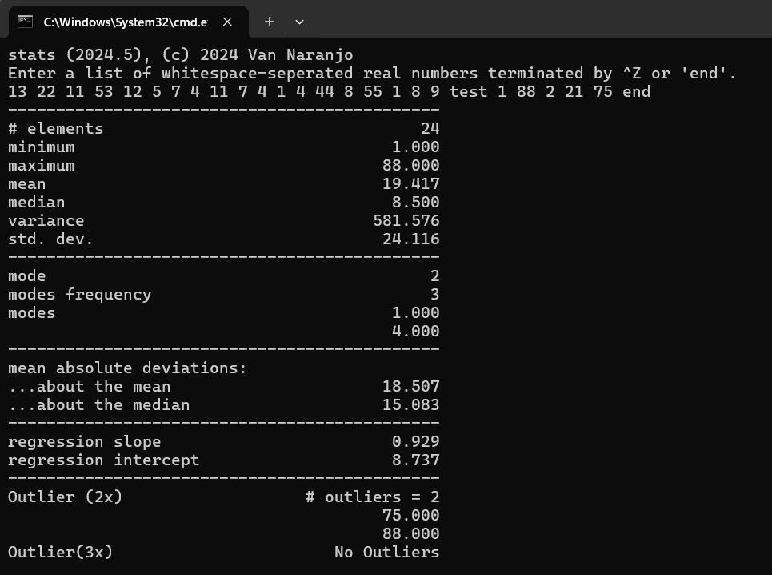
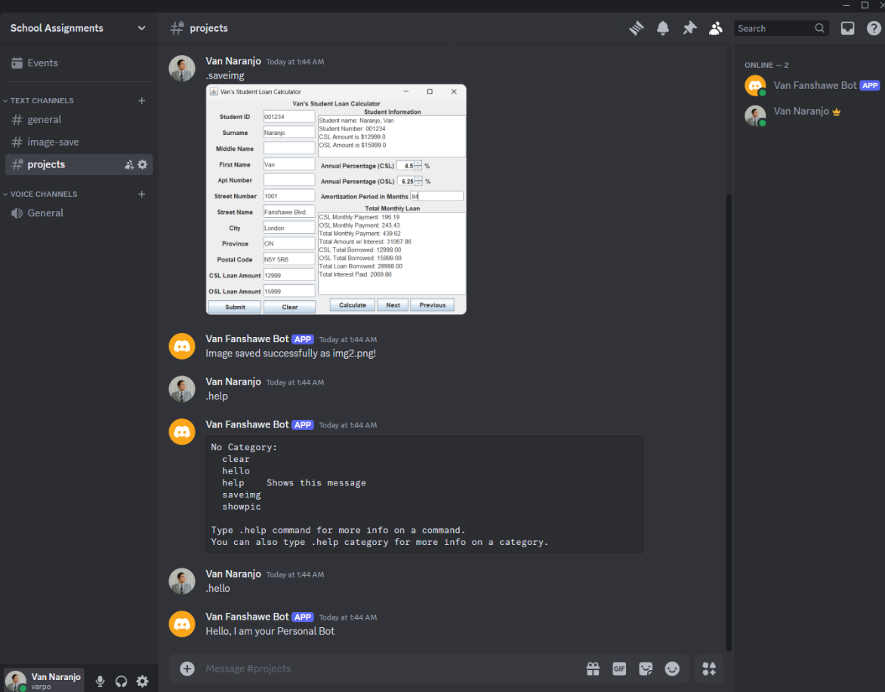
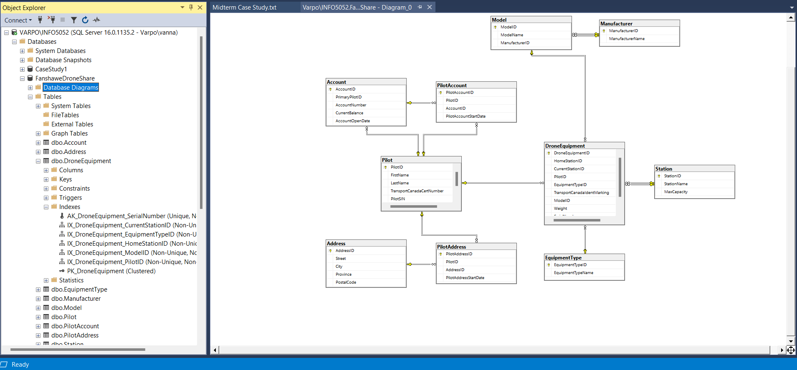

Developed a responsive and intuitive graphical user interface (GUI) using Java libraries such as Swing or JavaFX, ensuring a seamless user experience that effectively displays key loan information and calculations in a clear, organized layout.
Leveraged object-oriented programming principles to design a modular, scalable, and maintainable codebase, allowing for easy future updates and enabling support for multiple student entries without compromising code quality.
Engineered a comprehensive data management system that efficiently stores and retrieves detailed student information, facilitating accurate tracking and computation of student loans, ensuring that data was accessible and reliable.
Handled user interactions, including button clicks, input field updates, and dynamic content rendering, ensuring smooth and responsive functionality across the entire application, with immediate feedback for users.
Implemented robust input validation techniques to minimize errors and enhance accuracy, preventing invalid data entry and ensuring that all user inputs were processed correctly, thereby improving the reliability and stability of the application.
C++: Statistic Calculator

Gained expertise in managing user input and processing data from files in C++, enabling the program to effectively handle data from both manual inputs and external file sources, ensuring that all datasets are accurately loaded and prepared for detailed analysis.
Developed and implemented a wide range of statistical calculations, including measures of central tendency like mean and median, as well as measures of variability such as variance and standard deviation, to provide a comprehensive understanding of the dataset.
Designed and optimized algorithms to identify and calculate key statistical elements such as modes, outliers, absolute deviations, and regression metrics, ensuring the program could generate useful insights from complex data sets.
Utilized C++ file handling techniques to read and manage data from external sources, ensuring seamless integration and compatibility with various data formats, and allowing for easy scaling of the program to accommodate different datasets.
Analyzed and interpreted the statistical output, applying advanced statistical concepts like identifying outliers (using 2x and 3x thresholds) and performing regression analysis, to draw meaningful insights and support data-driven decision-making.
PYTHON: Discord Bot (Currently in Development)

Users will be able to upload pictures to the bot, which will save them to a database. The bot will also provide commands to retrieve and display these images upon request, offering a seamless way to store and access visual content.
Will include a built-in feature to clear messages, helping maintain a tidy chat environment and improving the overall user experience by allowing users or administrators to remove unwanted or unnecessary messages.
A dynamic to-do list will be integrated to help students stay organized by offering timely reminders for homework assignments and upcoming deadlines, with data automatically pulled from Fanshawe Online to ensure accuracy and up-to-date information.
And so on...
SQL: Creating and Optimizing Databases

Designed and implemented the database structure based on detailed project requirements, ensuring it was robust, scalable, and flexible to meet both current needs and potential future modifications.
Applied indexing techniques strategically to optimize query performance, enabling faster data retrieval, especially when handling large datasets, and improving overall database efficiency.
Developed and utilized stored procedures to encapsulate complex SQL queries and operations, which helped reduce code duplication, ensured better maintainability, enhanced data security, and simplified the execution of recurring tasks.
Managed and optimized database transactions to guarantee data integrity, using rollback and commit functionality to handle potential errors, prevent data corruption, and ensure consistent and reliable operations across the system.